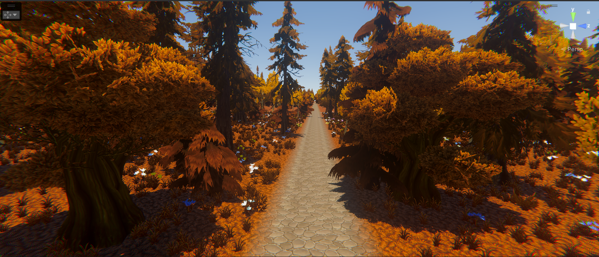
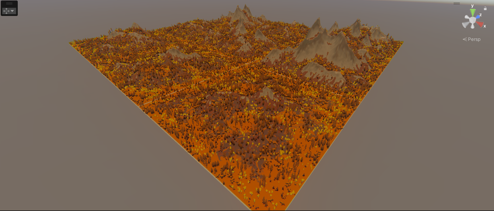
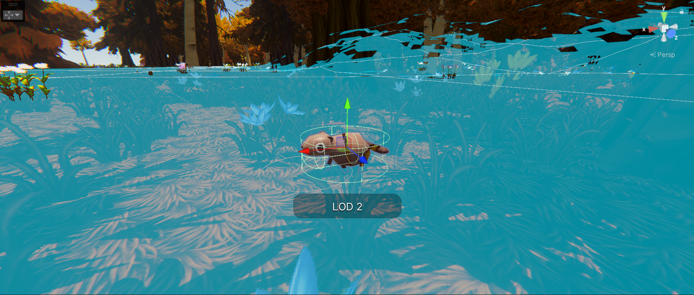
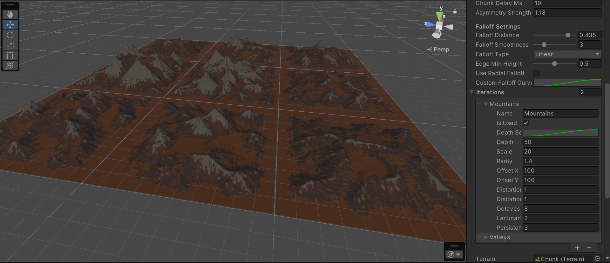
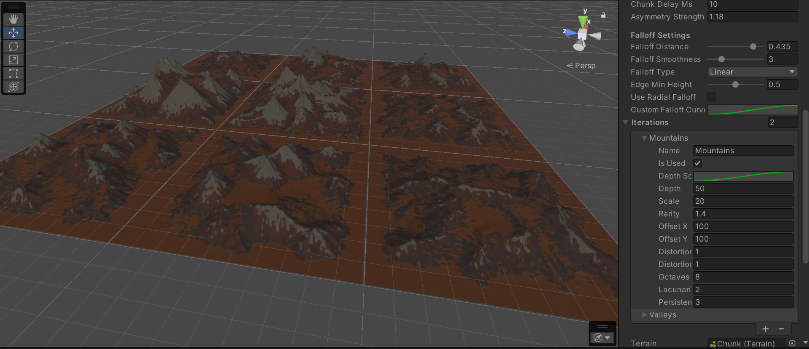
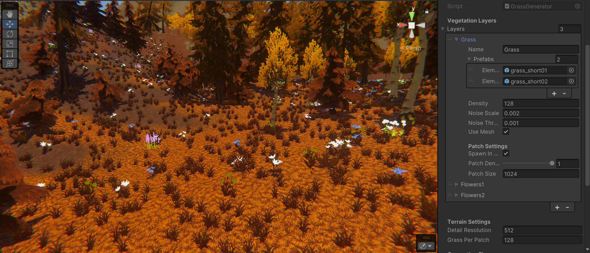
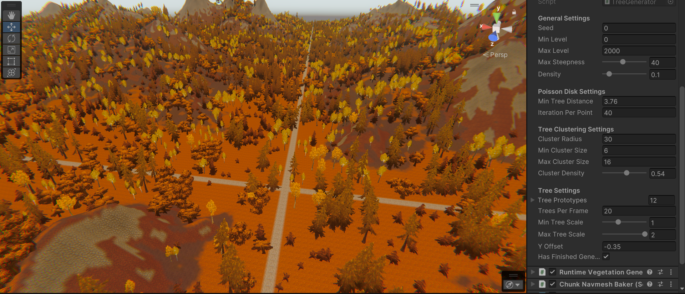
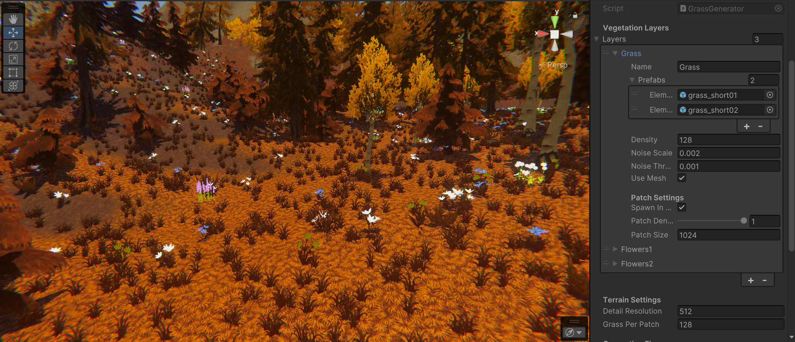
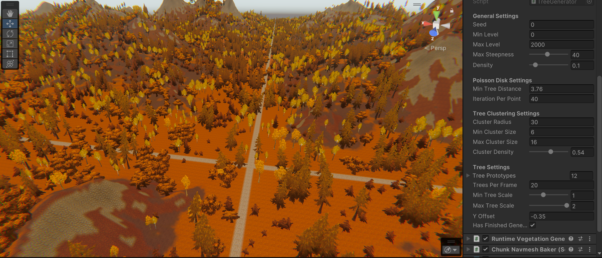

INFINITY TRAIN





The Game
Infinity Train is an infinite, procedural generated survival game.
I've been working on Infinity Train for over a year now. I've scrapped and rewritten height generators, deleted and rebuilt erosion scripts, and reimplemented vegetation systems with different algorithms such as Poisson disc sampling more times than I can count. I've written custom grass shaders and experimented with distribution algorithms, all to achieve one thing: procedural worlds that generate at runtime and feel truly alive.
I've been working on Infinity Train for over a year now. I've scrapped and rewritten height generators, deleted and rebuilt erosion scripts, and reimplemented vegetation systems with different algorithms such as Poisson disc sampling more times than I can count. I've written custom grass shaders and experimented with distribution algorithms, all to achieve one thing: procedural worlds that generate at runtime and feel truly alive.
The Goal
I'm trying to create environments that capture the magic of games like
Minecraft and The Forest. I want to build something that gives players
that feeling of motion, of discovering worlds that are constantly
changing, unique, and beautiful.
How It Works
The game uses a multi-layered procedural generation system:
Multi-octave Perlin noise with asymmetric variations creates
natural-looking landscapes. The erosion system uses particle
simulation to carve realistic valleys and weathering patterns.
Different falloff curves (linear, smooth-step, exponential) ensure
terrain edges blend naturally.


Poisson disc sampling distributes trees naturally without overlap. A
clustering system creates realistic forest patches. Grass generation
uses patch-based density control, and everything respects terrain
steepness so vegetation only grows where it makes sense.




Texture Blending
Textures apply based on terrain steepness. Roads generate along
chunk edges. Multiple alpha layers blend seamlessly, and the whole
system streams textures for infinite worlds.
Performance
Everything runs in chunks with background threading. Coroutines
handle generation without frame drops. The system supports
cancellation and shows real-time progress. Memory management keeps
infinite worlds running smooth. The technical complexity serves a
simple purpose: making worlds that feel like real places you want to
explore, where every hill and forest is unique and no two journeys
are the same.
Why?
Short answer:
Because I love it!
Long answer:
Working my ass off for years has led me to become a better person
and to think more about life, not just game development. I
realized, during the making of Infinity Train, that I always think
I am a good programmer and developer, and whenever I run into a
problem, I bash my head against the wall until it works. In that
process, I am not a good dev anymore—not even after solving
complex problems. So yeah, funnily enough, working more on
games—complex games that need optimizations and not just simple
stuff makes me think that there is always something to learn,
something to strive for. I wouldn’t have liked it if it was easy.
Of course, this game is not fun as of now; I am just focused on
making the environment, but with time, probably a lot of years,
something beautiful will be the end result. From the start, I
decided that this game will be like a diary. I’ll be working on it
my whole life, maybe, and in the meantime, I’ll make other games.
But this is the one I will always come back to, to improve it,
make it bigger, make it more fun, and more abstract!